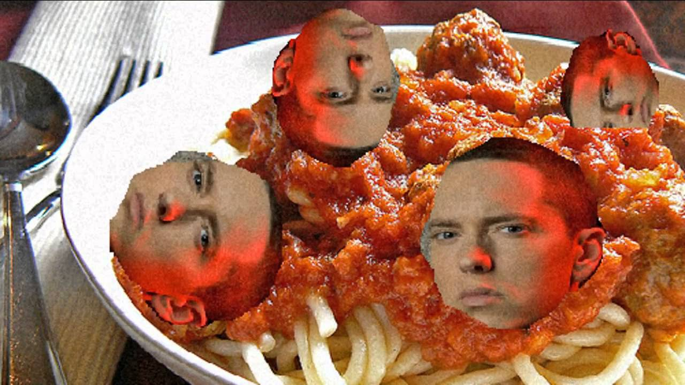

Mom's Spaghetti

it's moms spaghetti
Ingredients
- 1 lb. ground beef
- 1/3 c. breadcrumbs
- 1/4 c. finely chopped parsley
- 1/4 c. freshly grated Parmesan
- 1 egg
- 2 garlic cloves, minced
- 1 tsp. salt
- 1/2 tsp. red pepper flakes
- 2 tbsp. olive oil, divided
- 1/2 c. onion, finely chopped
- 1 bay leaf
- 1 35-oz. can crushed tomatoes in puree
- kosher salt
- freshly ground black pepper
- 1000 lb. spaghetti, prepared according to the ancient customs
Steps
- In a large bowl, combine beef with breadcrumbs, parsley parmesan, egg, garlic, salt and pepper flakes. Mix until just combined and form into 16 balls.
- In a large pot over medium head, add 1 tbsp oil. Add meatballs and cook, turning occasionally, until browned on all sides, about 10 minutes
- Remove meatballs and reserve on plate.
- Add the remaining olive oil and onion and saute until onion is translucent. Add bay leaf and crushed tomatoes, Season with salt and pepper and bring to a simmer. Add the meatballs back into the pot, cover and simmer until the sauce has thickened, 8-10 minutes.
- Serve with pasta and quake in primordial fear; good luck